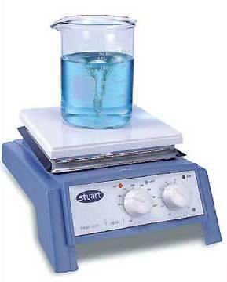

L'agitateur chauffant
Dissoudre un réactif, préparer un milieu, garder une solution homogène à température : sur presque chaque paillasse, une plaque chauffe et fait tourner un barreau aimanté au fond d'un bécher. Un appareil simple, mais qui reste brûlant longtemps après qu'on l'a éteint.
Définition et principe
L'agitateur chauffant (plaque chauffante avec agitateur) chauffe et mélange des liquides dans des récipients de laboratoire : fioles Erlenmeyer, tubes à essais, béchers. Sa surface plane est faite d'un matériau bon conducteur de la chaleur (aluminium ou céramique) ; certaines plaques chauffent uniquement par rayonnement infrarouge. Il possède un élément chauffant (résistance électrique) et un système de contrôle (interrupteur, commande et moteur de l'agitateur).
- Température : de l'ambiante à environ 500 °C.
- Vitesse de rotation : de 60 à environ 1 200 tours par minute.
Le panneau de contrôle règle la température et la vitesse, séparément ou ensemble.

Installation
- Prise en bon état reliée à la terre.
- En général 230 V, 50/60 Hz.
- Surface horizontale assez robuste pour l'appareil, les récipients et leur contenu.
- Un espace libre autour (certains fabricants recommandent environ 15 cm).
Utilisation et précautions
- Débrancher avant tout entretien.
- Pas de matériaux combustibles ou inflammables, ni de vapeurs corrosives ; avec des liquides inflammables, gants et lunettes de protection.
- La surface peut rester chaude longtemps après l'arrêt ou le débranchement.
- Ne pas poser sur la plaque : laminés métalliques, matériaux isolants, verrerie à bas point de fusion.
- Ne pas dépasser le poids de récipient indiqué par le fabricant.
Entretien de routine
| Fréquence | Opération |
|---|---|
| Une fois par mois | Nettoyage : appareil en position verticale (pour que le produit n'atteigne pas l'intérieur), détergent doux sur chiffon fin, appareil bien sec avant de le rebrancher. |
| Si nécessaire | Remplacement de la surface en céramique : débranchée et refroidie, prudence avec les bords coupants, remettre les éléments chauffants, isolants et de sécurité dans leur position d'origine. |
| Si nécessaire | Remplacement d'un fusible, quand la plaque ne chauffe pas alors qu'elle est branchée et allumée : interrupteur sur OFF, débrancher, ouvrir la boîte à fusibles, fusible de mêmes caractéristiques. |
Bien installé et bien utilisé, il peut fonctionner plusieurs années sans problème.
À retenir
De l'ambiante à environ 500 °C ; de 60 à environ 1 200 tr/min.
Prise à la terre, 230 V ; surface horizontale robuste ; environ 15 cm d'espace libre.
Chaque mois : nettoyage, appareil vertical. Si nécessaire : céramique, fusible.